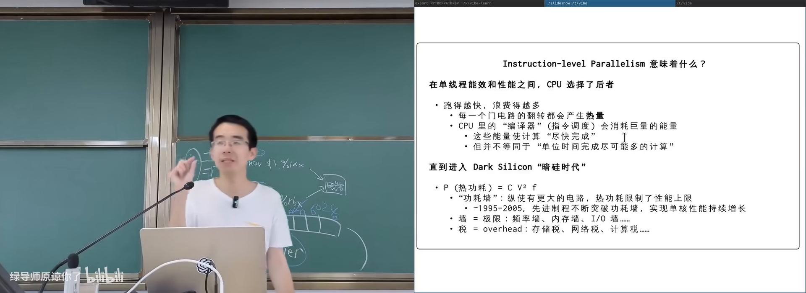
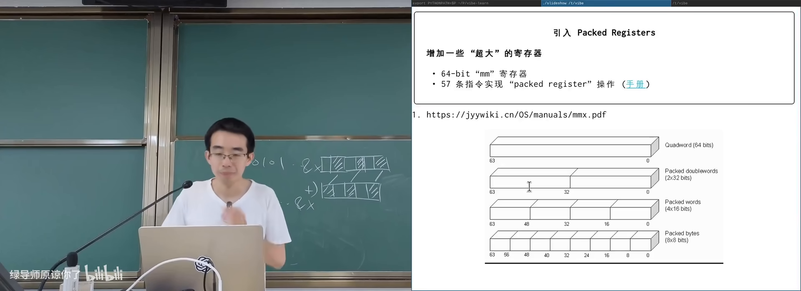
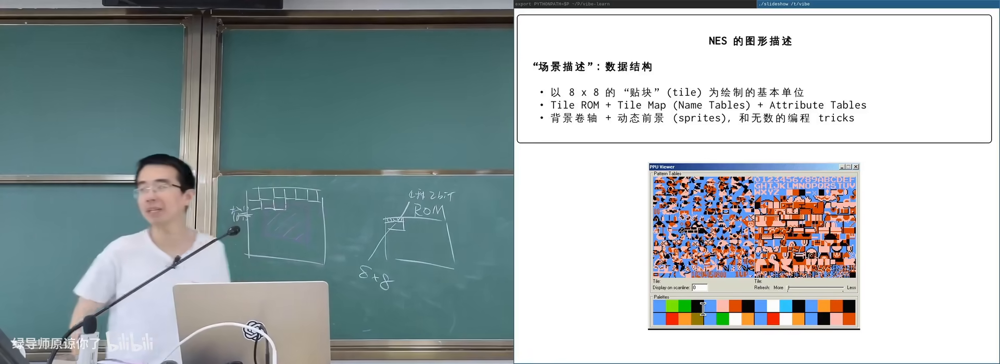
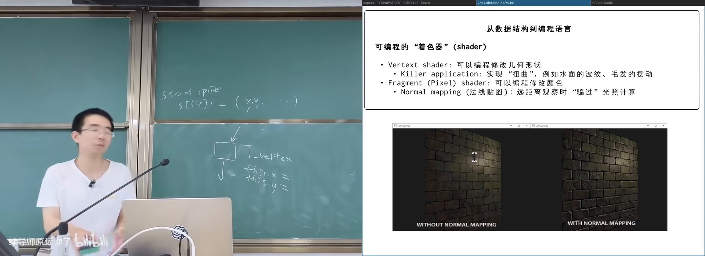
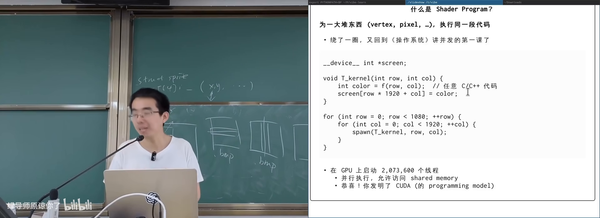

原视频：Bilibili · BV1df536aEMk（时长约 90 分钟） 课程：南京大学《操作系统原理》（2026）第 20 讲 整理说明：本书由视频字幕经 AI 重构而成；口语已转为书面语；关键时间点标注 (参考时间)，截图卡片可跳转视频对应位置。
1. 指令级并行：CPU 是一台“在线编译器”
(参考时间: 00:00)
前面几讲都在 CPU 上做线程级并行。本讲开始推翻 CPU 在“计算”上的垄断，从指令内部如何并行，一直讲到 SIMD 与 GPU。
1.1 顺序只是假象
课程里的最小 RISC-V 模型（mini rv32ima）看起来一步一步执行；但现代 CPU 内部：
- 逻辑门天生并行：一次可以从内存取出 64/128 bit；
- 可以译码多条指令，检查依赖后并行发射；
- 双口寄存器堆允许同时读写多个寄存器；
- 用 perf 等工具可以度量 IPC（instructions per cycle，每周期完成指令数）。
/proc/cpuinfo 中的 bogoMIPS（用空转循环粗估的“百万指令每秒”）往往大于主频（GHz）——侧面说明一周期可完成多条指令。
课堂测 IPC 的思路：
- 写无依赖指令流（对不同寄存器加一）与有依赖指令流（反复
x = x + 1）； - 用 Linux 性能计数器（指令数、周期数）相除；
- 在树莓派上，有依赖时 IPC 可仍 >1，混合指令流甚至接近 3。
期末可能考的开放题：如何证明你的处理器一个时钟周期能执行超过一条指令？（查 CPU 信息 + 设计无冲突指令 + 用系统计数器度量）
1.2 功耗墙与“税”
动态流水线里，CPU 像内置了一台编译器：长指令队列、数据流分析、寄存器重命名等。这些电路翻转发热却不直接完成你的算术——像交税。
芯片动态功耗大致与以下因素有关：
- 容电（随制程）
- 开关频率
- 电压平方 (V^2)
1995–2005 年左右，制程进步 + 拉长流水线/加大缓冲，单核性能飞涨；封装散热能力有限（约百余瓦），撞上 功耗墙（wall，系统里还有频率墙、内存带宽墙等）后，这条路到头了。

指令级并行的收益与功耗墙在 B 站打开 (00:17:00)
产业选择：
- 多核：同样面积/功耗下放更多更简单的核（单核应用可能变卡，吞吐任务更划算）；
- big.LITTLE（约 2011）：大核 + 小核 + 超小核，按活动状态切换；
- 让一条指令处理更多数据：分摊调度开销。
1.3 激进尝试：VLIW
VLIW（Very Long Instruction Word，把多条可并行指令打包成超长字，由编译器保证无依赖）把调度责任从硬件搬到编译器，译码极简。IA-64 等商业上失败（迁移成本、当时 ILP+制程红利仍在），但在部分加速器上仍有影子；在强调“调度税≈0”的时代可能复活。
2. SIMD：一条指令，一批数据
(参考时间: 00:25:17)
SIMD（Single Instruction Multiple Data，同一条指令对一批数据做相同操作）不改变“单线程写法”，却把调度税摊薄到多个数据上。
2.1 MMX 时代
1997 年 MMX（Multimedia Extension）：为 32 位机增加 64 位寄存器，可当作 4×16-bit 整数并行加减；溢出时饱和到最大/最小值，而非像普通整数那样回绕。随处理器附赠的演示光盘展示了带光照的 3D 画面——当年的 “killer app”。
编程思想你早已用过：
- bitset：用一个
uint32_t表示 32 个元素的集合； - 查
x是否在集合：定位字节 + 测位； - popcount（数二进制里 1 的个数）的位运算 tricks（
x & -x、与0x5555/0xAAAA分离奇偶位再树状相加）本质也是 SIMD 式“一次处理多位”——但在乱序 CPU 上依赖链过长，现代更优做法是查表（8-bit 表 + 并行 load 相加）。
2.2 从 MMX 到 AVX-512
寄存器一路加宽：
| 名称 | 宽度 | 名称由来 |
|---|---|---|
| MMX | 64-bit | Multimedia |
| SSE (XMM) | 128-bit | Streaming SIMD Extensions |
| AVX (YMM) | 256-bit | Advanced Vector Extensions |
| AVX-512 (ZMM) | 512-bit | 名称用尽后的 Y/Z |
支持的数据类型从整数扩展到 float32/float64（IEEE 754），并加入 shuffle、FMA（乘加一条指令）等。AVX-512 在某些代号 CPU 上已触发热密度极限——开启后可能降频。

SIMD 寄存器加宽：从 MMX 到 AVX在 B 站打开 (00:32:30)
2.3 SIMD 没解决的部分
SIMD 指令仍要：
- 走 cache / 动态流水线；
- 与其他指令抢带宽与功耗。
若目标是“调度代价接近零、大规模并行”，还需要另一条路：更简单的核心 + 更多硬件副本。
3. 图形处理器：从场景描述到像素
(参考时间: 00:41:21)
3.1 NES：游戏主机如何“画出来”
1972 年 Magnavox Odyssey 是家用主机先声；1983 年 NES（红白机）上已有《塞尔达》等精美画面。
CPU 侧极弱：MOS 6502，IPC ≈ 0.43，无复杂乱序；屏幕却有约 64 万像素、64 色、60 FPS。约一万条指令如何画完六万像素？
答案：把“要画什么”与“怎么画”分开——CPU 只维护场景描述（数据结构），专用 PPU 硬件并行扫描成像素。
描述模型（简化）：
- 背景：规则排列的 8×8 tile（每 tile 仅 4 色，含透明），调色板重映射即可换色（马里奥/路易吉同 tile 不同 palette）；
- 显示窗口可在更大背景上滑动 → 卷轴；
- Sprite（小精灵）：任意位置的 8×8 前景块，带优先级与水平/垂直翻转；
- 省存储 tricks：用翻转拼圆、蘑菇两帧镜像“走路”；
- 全屏变色可只换调色板，几何不变。
GPU 内部像有 line/chunk 计数器的时序电路：对每个像素，先算背景色，再叠加 sprite，取最高优先级——与 z-buffer 思想类似，且逻辑门可并行处理多个像素。

NES PPU：tile + sprite + 调色板场景描述在 B 站打开 (00:47:30)
3.2 2D 描述语言的进化
CPU/GPU 变强后，描述不再限于固定 tile：
- 任意 bitmap 贴到矩形/四边形；
- 线性变换（缩放、旋转、剪切）——像拉一张有弹性的纸；
- 用 2D 挤压模拟伪 3D（Game Boy Advance 等；缺深度信息，旋转大了会穿帮）。
3D 自然化：平移在齐次坐标下也可写成 4×4 矩阵，顶点 + 贴图 + 光照都变成描述 + 固定管线。高中生若会线性代数，理论上能写出简易 3D 引擎。
3.3 Shader：描述变成可编程程序
固定结构不够用时，业界把“描述”升级为程序：
- Vertex shader（对每个顶点执行的程序）：改
x,y等属性，可做水波、毛发摆动——本质仍是 embarrassingly parallel； - Pixel/fragment shader（对每个像素做后处理）：改 RGB；对应摄影里对 RAW 的曝光/曲线/蒙版操作；
- 法线贴图：不增加多边形，用像素上的法线向量与光照夹角伪造凹凸感（远景真实，近景会穿帮）。
Shader 是受限语言：可算术、分支、访存，不能随便 syscall。

顶点着色与像素着色流水线在 B 站打开 (01:05:00)
3.4 GPGPU 前夜
约 2001 年起，研究者把科学计算“伪装”成图像：
- 矩阵乘法分解为外积之和；
- 矩阵当 BMP 送进显卡，用 vertex/pixel shader 算外积与叠加；
- 预示了今天用 GPU 做高性能计算。
Shader 程序本质是：
for each vertex/pixel:
执行同一段代码
这正是线程课上学的“海量线程跑同一份代码”。
4. 从 Shader 到 CUDA
(参考时间: 01:02:58)
4.1 想在显卡上跑“线程课作业”
设想在显存分配 1920×1080 数组，希望每个像素一个线程：
// 逻辑上的 kernel
void thread_kernel(int row, int col) {
picture[row * 1920 + col] = mandelbrot(row, col);
}
这就是 CUDA（Compute Unified Device Architecture，NVIDIA 的 GPU 通用并行编程模型）的核心心智：创建海量线程，都跑同一段 kernel，数据主要在显存。
难点：若每线程 1KB 开销，200 万线程不可接受。GPU 选择极简硬件 + 高效调度。
4.2 SIMT：单指令多线程
不能省的电路：ALU、寄存器（算数必需）。可以省的：PC 与译码器。
SIMT（Single Instruction Multiple Thread，一捆线程共享一个 PC，同步推进）：
- 现代 NVIDIA 常见 thread warp ≈ 32 线程一捆；
- 共享 PC → 只需一份译码 → “税”大减；
- 每线程仍有自己的寄存器（颜色、循环变量等）。
执行效果：同一 warp 执行 store 时，地址可能是 3*1920+0/1/2...，形成合并访存（coalesced access），对内存控制器友好。
flowchart LR
K[CUDA kernel 代码] --> W[warp 0: 32 线程<br/>共享 PC]
K --> W2[warp 1: 32 线程]
K --> W3[warp N...]
W --> SM[SM 执行单元]
W2 --> SM
SM --> M[合并访存 / 显存]
GPU 还会：
- 用多个 warp 切换隐藏延迟（某个 warp 在等全局内存时换另一个）；
- 一个 stream multiprocessor 管理多组 warp。
4.3 代价：难写、怕不连续、怕分支
- 内存不连续 → 访存碎片化，性能暴跌；
- 分支在 SIMT 下极别扭：没有“二选一 PC”，而是算条件后 mask/disable 不满足的线程，再走线性代码路径（A 与 B 都可能被执行，不满足的线程被关掉）；
- CUDA 汇编里少见传统
if else branch，更像 enable/disable 逻辑。
课上用 GPU 跑 Mandelbrot，远快于 CPU 版；让 AI 解读生成的 PTX/SIMT 汇编，有助理解“没有 if 的 if”。

CUDA kernel：海量线程 + SIMT 调度在 B 站打开 (01:17:30)
5. 小结：从交税到大规模并行
| 层级 | 机制 | 调度/税 | 并行粒度 |
|---|---|---|---|
| 乱序 CPU | ILP、大缓冲、编译器式调度 | 高（功耗墙） | 指令 |
| SIMD | 宽寄存器，一条指令多数据 | 中 | 数据向量 |
| 多核 | 多个复杂核 | 高（单核仍贵） | 线程 |
| GPU/CUDA | SIMT：省 PC/译码，海量线程 | 低（摊薄） | 顶点/像素/数据元素 |
优化直觉：让每一次逻辑门翻转都参与有用计算；科学计算与图形的共同形态，是“对一堆数据执行同一段代码”。
附录：概念补给
IPC（Instructions Per Cycle）
- 是什么：每个时钟周期平均完成多少条指令。
- 课上为何出现：证明现代 CPU 不是“一周期一条指令”。
- 和什么像：每分钟能通过安检的人数。
bogoMIPS
- 是什么：Linux 启动时用空转循环粗估的 CPU 速度指标。
- 课上为何出现：其数值常大于主频，暗示 ILP。
- 和什么像：汽车厂标称油耗 vs 实测——粗糙但有信息量。
功耗墙
- 是什么：封装散热能力限制下，无法再靠加大复杂单核提升性能。
- 课上为何出现：解释多核与 SIMD/GPU 为何成为主路径。
- 和什么像：风扇就这么大，发动机再猛也会过热。
ILP（指令级并行）
- 是什么：同一流内多条指令在 CPU 内部重叠执行。
- 课上为何出现：现代 CPU 性能来源之一，也是“税”的来源。
- 和什么像：厨房备菜与炒菜流水线并行，而不是一道菜做完再洗锅。
SIMD
- 是什么：单指令对向量数据并行操作。
- 课上为何出现：不改单线程模型的前提下摊薄调度开销。
- 和什么像：一台压面机同时压一排面，而不是一根一根压。
MMX / SSE / AVX
- 是什么：Intel/AMD 依次加宽的 SIMD 指令与寄存器扩展名称。
- 课上为何出现：多媒体与数值计算硬件演进史。
- 和什么像：货车从 4 吨加长到 12 吨，路还是同一条指令集公路。
VLIW
- 是什么：超长指令字，由编译器打包可并行操作，硬件简单译码。
- 课上为何出现：把“调度税”尽量降到零的历史尝试。
- 和什么像：演出单一次写清所有演员站位，导演现场只喊“开始”。
tile / sprite（图形）
- 是什么：早期 GPU 用的小图块与可任意摆放的前景精灵。
- 课上为何出现：NES 用极简场景描述驱动并行扫描。
- 和什么像：拼贴画：固定花色瓷砖 + 可移动贴纸。
调色板（palette）
- 是什么：给少量索引色映射到具体 RGB 的查找表。
- 课上为何出现：同 tile 不同角色色、全屏动画只换色。
- 和什么像：同一套线稿，改印刷油墨颜色就出不同角色卡。
shader（着色器）
- 是什么：在图形管线上对顶点或像素执行的可编程程序。
- 课上为何出现：场景描述升级为“可执行描述”。
- 和什么像：从填空模板变成可运行的小脚本。
vertex shader / fragment shader
- 是什么：分别对顶点、对像素执行的着色器阶段。
- 课上为何出现：水波、调光、法线贴图等效果的实现点。
- 和什么像：先确定角色骨架位置，再给皮肤上妆。
法线贴图（normal mapping）
- 是什么：用像素级法线向量伪造凹凸光照，不增加几何。
- 课上为何出现：shader 如何用计算换多边形。
- 和什么像：平面墙贴上带阴影的壁纸，远看有立体感。
GPGPU
- 是什么：用图形处理器做通用计算（通用 GPU）。
- 课上为何出现：2001 年把矩阵乘法“画”成图片算。
- 和什么像：把显卡当超算的散热片养着的算力矿工（正面意义版）。
CUDA
- 是什么：NVIDIA 的 GPU 通用并行编程模型与平台。
- 课上为何出现：把“每个像素一线程”的心智变成日常工程。
- 和什么像：操作系统课线程 API 的显卡特供版，但一次 spawn 两百万个。
SIMT
- 是什么：多线程共享 PC、同步执行同一指令流的 GPU 模型。
- 课上为何出现：海量线程下把译码与调度税摊到接近零。
- 和什么像：军训队列听同一口令齐步走，个人出脚时机由各自脚感微调。
warp
- 是什么：GPU 中一起调度的一小捆线程（常见 32 个）。
- 课上为何出现：SIMT 的硬件调度单位。
- 和什么像：一个班组同时上工位，而不是一个人一个工位。
合并访存（coalesced access）
- 是什么：同 warp 线程的访存地址连续，可高效合并成大块传输。
- 课上为何出现：CUDA 性能好坏的关键因素之一。
- 和什么像：整排人同时从同一书架连续抽书，比各自跑不同楼层更快。
书架 Shelf 流水线生成 · 内容衍生自 B 站公开课程视频 BV1df536aEMk